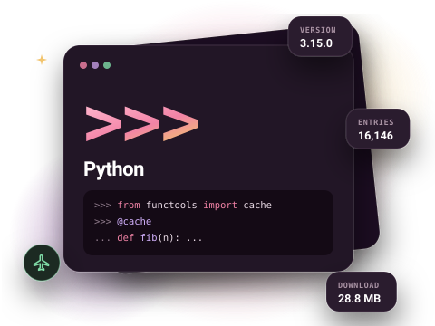
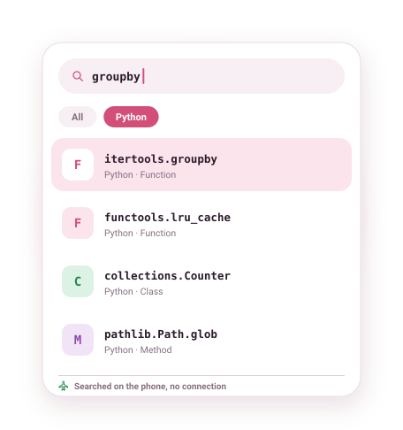

Python documentation, offline on your phone
The complete Python 3 docs, library reference included, downloaded once and searchable with no connection. Look up subprocess.run on a train, or check what itertools.groupby really returns while your laptop is packed away.

What is in the Python docset
The Python docset mirrors the official documentation: the tutorial, the language reference, the standard library reference, the C API and the HOWTO guides. Every module, class, function, method and attribute is its own search entry, so a search for lru_cache lands on functools.lru_cache directly instead of on a long page you have to scroll.
Entries keep their dotted names. That makes Python one of the nicest docsets to search: type a module name and a dot (pathlib.) and you get the whole API of that module as a list.
- Version
- 3.15.0
- Entries
- 16,146
- Download
- 28.8 MB
- Source
- Official docset feed

Example entries you can search offline
A few real entries from the Python docset's index, as they appear in search results:
| Entry | Type |
|---|---|
| asyncio.gather | Function |
| asyncio.TaskGroup | Class |
| pathlib.Path.glob | Method |
| functools.lru_cache | Function |
| dataclasses.dataclass | Function |
| itertools.groupby | Function |
| collections.Counter | Class |
| subprocess.run | Function |
| typing.TypedDict | Class |
| str.format | Method |
How to get the Python documentation offline
- Install DevDocs from Google Play. It is free and needs no account.
- Open the Store tab and search for Python.
- Tap Download. The docset downloads in the background (28.8 MB compressed) and is indexed on your phone.
- Open Search or the docset in your Library. From now on it works with no connection.
Tips for searching the Python docs
- Search the dotted path when a name is common:
json.dumpsis quicker to find thandumps. - Open a docset and use its type filter to list only Modules, which works like a table of contents for the standard library.
- Bookmark the pages you keep returning to (string formatting,
datetimeformat codes). Bookmarks open at the exact section. - The docset is updated when the upstream feed publishes a new version; the Store shows when an update is available.
Related docsets
Also in the DevDocs Store: NumPy, Pandas, SciPy, Matplotlib, Flask, SQLAlchemy. Install any of them and one search covers them all. See also: Django documentation offline.
Python docs offline: questions
Which Python version does the docset cover?
Is the standard library included?
Can I also get NumPy, Pandas or Django docs?
More answers in the DevDocs FAQ.
Other documentation you can keep offline
- Kotlin 12,301 entries
- Java 59,956 entries
- JavaScript 9,447 entries
- Android (Kotlin) 200,572 entries
- React 1,369 entries
- Django 5,705 entries
Or browse all 806 docsets by category.
Get the Python docs on your phone
DevDocs is free, has no ads and needs no account.